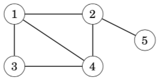
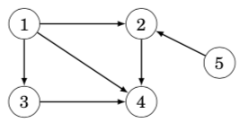

16. graph图论¶
Many programming problems can be solved by modeling the problem as a graph problem and using an appropriate graph algorithm. A typical example of a graph is a network of roads and cities in a country.
16.1. 概念¶
A graph consists of nodes and edges. In this book, the variable n denotes the number of nodes in a graph, and the variable m denotes the number of edges. The nodes are numbered using integers 1,2,…,n. 下面这个图，有5个顶点，7条边。

A path leads from node a to node b through edges of the graph. The length of a path is the number of edges in it. For example, the above graph contains a path 1→3→4→5 of length 3 from node 1 to node 5:

A path is a cycle if the first and last node is the same. For example, the above graph contains a cycle 1 → 3 → 4 → 1. A path is simple if each node appears at most once in the path.(概念，简单图)
16.2. Connectivity连通性¶
A graph is connected if there is a path between any two nodes. For example, the following graph is connected:

The following graph is not connected, because it is not possible to get from node 4 to any other node:

The connected parts of a graph are called its components. For example, the following graph contains three components: {1, 2, 3}, {4, 5, 6, 7} and {8}.

A tree is a connected graph that consists of n nodes and n − 1 edges. There is a unique path between any two nodes of a tree. For example, the following graph is a tree:

16.3. Edge directions有向边¶
A graph is directed if the edges can be traversed in one direction only. For example, the following graph is directed:

The above graph contains a path 3→1→2→5 from node 3 to node 5, but there is no path from node 5 to node 3.
无向边，其实，是两条有向边的合并版本
16.4. Edge weights边权¶
In a weighted graph, each edge is assigned a weight. The weights are often interpreted as edge lengths. For example, the following graph is weighted:

The length of a path in a weighted graph is the sum of the edge weights on the path. For example, in the above graph, the length of the path 1 → 2 → 5 is 12, and the length of the path 1→3→4→5 is 11. The latter path is the shortest path from node 1 to node 5.
16.5. Neighbors and degrees相邻的两个顶点和顶点的度¶
Two nodes are neighbors or adjacent if there is an edge between them. The degree of a node is the number of its neighbors. For example, in the following graph, the neighbors of node 2 are 1, 4 and 5, so its degree is 3.

The sum of degrees in a graph is always 2m, where m is the number of edges, because each edge increases the degree of exactly two nodes by one. For this reason, the sum of degrees is always even.
A graph is regular if the degree of every node is a constant d. A graph is complete if the degree of every node is n − 1, i.e., the graph contains all possible edges between the nodes.
In a directed graph, the indegree of a node is the number of edges that end at the node, and the outdegree of a node is the number of edges that start at the node. For example, in the following graph, the indegree of node 2 is 2, and the outdegree of node 2 is 1.

概念：完全图，每个顶点的度数都是n-1。在有向图中，分为入度和出度。
16.6. Simplicity简单图¶
A graph is simple if no edge starts and ends at the same node, and there are no multiple edges between two nodes. Often we assume that graphs are simple. For example, the following graph is not simple:

概念：简单图，无重边，无自环
16.7. Adjacency list representation邻接表建图(vector版本)¶
In the adjacency list representation, each node x in the graph is assigned an adjacency list that consists of nodes to which there is an edge from x. Adjacency lists are the most popular way to represent graphs, and most algorithms can be efficiently implemented using them.
A convenient way to store the adjacency lists is to declare an array of vectors as follows:
vector<int> adj[N];
The constant N is chosen so that all adjacency lists can be stored. For example, the graph

adj[1].push_back(2);
adj[2].push_back(3);
adj[2].push_back(4);
adj[3].push_back(4);
adj[4].push_back(1);
If the graph is undirected, it can be stored in a similar way, but each edge is added in both directions.
For a weighted graph, the structure can be extended as follows:
//当边权不是1的时候，可以用pair维护
vector<pair<int,int>> adj[N];
In this case, the adjacency list of node a contains the pair (b,w) always when there is an edge from node a to node b with weight w. For example, the graph can be stored as follows:

adj[1].push_back({2,5});
adj[2].push_back({3,7});
adj[2].push_back({4,6});
adj[3].push_back({4,5});
adj[4].push_back({1,2});
The benefit of using adjacency lists is that we can efficiently find the nodes to which we can move from a given node through an edge. For example, the following loop goes through all nodes to which we can move from node s:
//这是C++ 11的写法，在比赛中，还不能使用
for (auto u : adj[s]) {
// process node u
}
//这样枚举就可以了，理解“散列边”这个概念
for (int i = 0; i < adj[i].size(); i++)
{
}
16.8. Adjacency matrix representation邻接矩阵建图¶
An adjacency matrix is a two-dimensional array that indicates which edges the graph contains. We can efficiently check from an adjacency matrix if there is an edge between two nodes. The matrix can be stored as an array
int adj[N][N];
where each value adj[a][b] indicates whether the graph contains an edge from node a to node b. If the edge is included in the graph, then adj[a][b] = 1, and otherwise adj[a][b] = 0. For example, the graph can be represented as follows:


If the graph is weighted, the adjacency matrix representation can be extended so that the matrix contains the weight of the edge if the edge exists. Using this representation, the graph corresponds to the following matrix:


The drawback of the adjacency matrix representation is that the matrix contains n^2 elements, and usually most of them are zero. For this reason, the representation cannot be used if the graph is large.
你看，这个邻接矩阵是不是就是一个矩阵，表示一个点和另外一个点的连通性
邻接矩阵不能存很大的图，因为受建立二维数组大小的限制。适合存稠密图
邻接表可以存很大的图，也可以存很小的图。更适合存稀疏图
16.9. Adjacency list representation邻接表建图(一维数组版本)¶
我用这个用的更多一些
int h[N], e[M], ne[M], idx;
void add(int a, int b)
{
e[idx] = b, ne[idx] = h[a], h[a] = idx++;
}
//调用
scanf("%d%d", &a, &b);
add(a, b), add(b, a);
//双向表，就双向add，单向边就一个add
//要注意一维数组开的大小问题，如果是无向图，M是N的两倍
//如果是有边权的情况，就还需要开一个一维数组w[M]用来维护边权
//理解“散列”的形状
//枚举边
for (int i = h[u]; i != -1; i = ne[i])
{
int j = e[i];
if (!st[j])
{
int s = dfs(j);
res = max(res, s); //所有子树的最大值
sum += s; //累积求这个点的子树大小
}
}